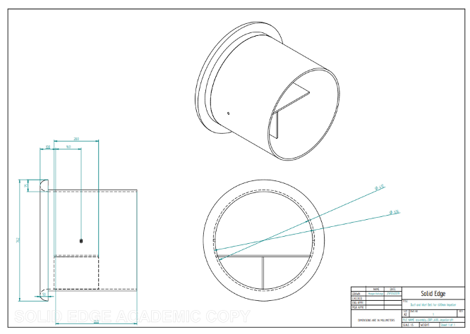
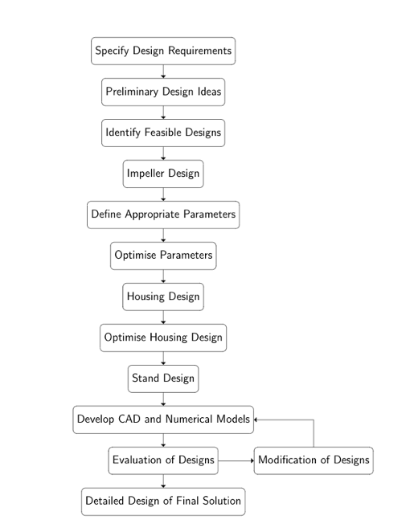
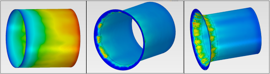
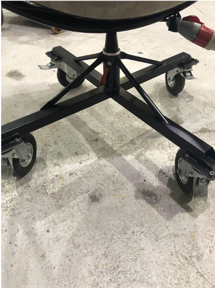

This was an original project to design a small wind machine for the prop and special effects production company, Artem. The company supplied the brief and the major requirements, but within this I was allowed a large scope of design freedom. This required independent thinking and judgement on the most important requirements.
Wind machines are commonly used in the entertainment industry to evoke atmosphere in fashion shoots, films and adverts. The special effects production company Artem produces these machines for such uses.
It was my responsibility to spear-head this project. While I was given advice from my supervisor and the employees at Artem, I was required to lead the project, making key design decisions which I then presented to Artem.

Artem required a modernised and improved model of their smallest machine. The wind machine was subject to a number of constraints. The most important of these were: size, production of wind speeds of 40 mph, pan and tilt mechanisms, minimum cost and ease of manufacturing.
The design process followed an iterative step-wise approach involving optimisation and revisions in order to develop the final solution.

Research into conventional practices and specific fluid mechanics of the system informed the main design parameters and areas for innovation. A wind machine consists of a main fan design, motor, protective guards, mount and a stand. All of the design decisions relating to these components including size, shape, type, etc. were considered and chosen by me.
Literature pertinent to fans were extensively researched in order to inform the design. The type of fan (axial) was chosen due to air volume characteristics, noise and moderate power consumption. Fundamental principles of wind machine design were investigated through mathematical analysis. From this initial research the most important parameters for aerodynamic performance were identified, this allowed areas for innovation and optimisation to be pinpointed.
Effort was taken to avoid over-engineering of the design for the context of the entertainment industry. A simple set of design rules were constructed to develop a design of optimal aerodynamic performance while minimising cost.
The project involved vibrational analysis using Solid Edge to assess the risk of resonance. CFD simulations using ANSYS predicted aeroacoustics and the flow field through various inlets. The inclusion of an inlet bell significantly improved performance and minimised the dimensions of the machine. Noise predictions were carried out on the rotor and housing to confirm design decisions such as tip clearance and housing shape.
The final design was modelled on Solid Edge. The structure is supported by a steel U-stand and rotating floor stand, allowing pan and tilt. This machine produces approximately 43mph, weighs 63kg and fulfils the requirements of the brief.

